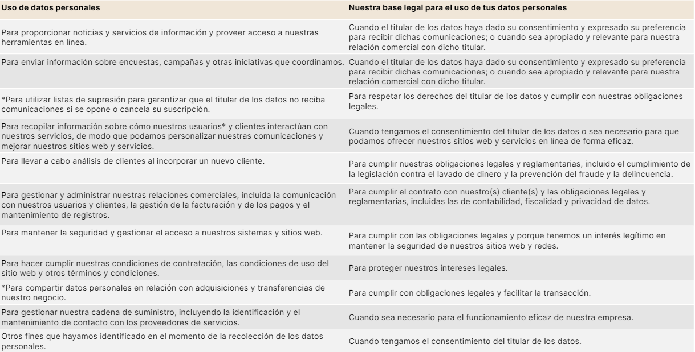

Así protegemos tus datos
Te dejamos aquí nuestras políticas de privacidad
Políticas de privacidad
Como empresa de servicios de acompañamiento financiero, en somosfin tenemos la importante responsabilidad de proteger los datos que usted comparte con nosotros y garantizar el mantenimiento de su privacidad. Cumplimos con la normativa del Reino Unido de Protección de Datos (General Data Protection Regulation and Data Protection Act 2018), así como todos los requisitos legales y regulatorios vigentes al momento del registro, procesamiento y uso de datos personales.
Este documento pretende ayudarle a comprender qué información recogemos, cómo la utilizamos y cómo puede usted controlar dicha información. Sólo podemos hacer lo que describimos en este documento con su consentimiento, por lo que al aceptar esta política de privacidad nos autoriza a recopilar, almacenar y utilizar sus datos.
Datos personales que recopilamos
“Datos personales” es cualquier información relacionada con usted y que lo identifica directamente a partir de esa información o indirectamente, por referencia a otra información a la que tenemos acceso. Los datos personales que recopilamos y cómo los recopilamos dependen de cómo interactúa con nosotros. Las categorías de datos personales que recopilamos incluyen:
- Información que nos proporciona a través de la plataforma web y nuestros servicios.
- Información enviada a través de nuestra app o sitio web o cualquier herramienta de registro de Somosfin: por ejemplo, cuando te registras en la app y proporcionas datos como tu nombre y dirección de correo electrónico, o detalles que recopilamos sobre cómo utilizas la app y el sitio web.
- Información que nos facilita a través del chat de mensajería de Somosfin.
- Información sobre sus finanzas para crear su plan financiero, incluyendo ahorros, inversiones, pensiones, hipotecas, seguros, ingresos y gastos, información sobre pagos e información sobre cuentas bancarias.
- Otra información que comparta con nuestro equipo.
- Información de cualquier cuenta en línea que comparta con nosotros.
- Respuestas que dé a encuestas sobre Somosfin y nuestros servicios.
- Registro de reuniones con nuestro equipo que serán grabadas con el fin único de garantizar la calidad en el servicio provisto.
- Información que recopilamos o generamos si te pones en contacto: El número de teléfono o la dirección de correo electrónico con la que se pone en contacto con nosotros y el contenido de la conversación o el correo.
Si nos proporciona información sobre otra persona, debe asegurarse de cumplir con las obligaciones legales que puedan aplicarse al proporcionarnos la información y permitirnos, cuando sea necesario, compartir esa información con nuestros proveedores de servicios.
El tratamiento de datos personales de un niño se considerará lícito cuando el niño tenga al menos 16 años. Si el niño es menor de 16 años, dicho procesamiento sólo será lícito si y sólo en la medida en que sea dado o autorizado por el titular de la patria potestad o tutela sobre el niño.
Cómo usamos su información en Somosfin
Entendemos que usted comparte mucha información personal con nosotros. Nos comprometemos a no obtener más de la que necesitamos y a mantener a salvo la que obtenemos. Nuestro objetivo es recopilar únicamente los datos que necesitamos para atender mejor sus necesidades.
Se nos permite utilizar sus datos personales si contamos con su consentimiento o si se aplica otro motivo legalmente permitido. Estos incluyen cumplir un contrato con usted, cuando tenemos una obligación legal que cumplir o cuando es de nuestro interés comercial legítimo utilizar sus datos personales. Sólo podemos confiar en nuestro interés comercial legítimo si es justo y razonable hacerlo.
Nuestro uso de sus datos personales depende de cómo y dónde interactúa con nosotros.
Solo procesaremos datos de categoría especial cuando el procesamiento sea necesario con el fin de brindar a nuestro cliente asesoramiento sobre obligaciones o a un individuo asesoramiento sobre sus derechos en el ámbito laboral o de seguridad social; o cuando sea necesario hacerlo para el establecimiento, ejercicio o defensa de reclamaciones legales.
Por favor contáctenos en info@somosfin.com si tiene alguna pregunta sobre cómo recopilamos y utilizamos sus datos personales.
Información que recopilamos de terceros
La mayoría de los datos personales que recopilamos sobre usted serán información que usted nos proporciona voluntariamente. En algunas circunstancias también podemos recibir información de:
- cuerpos reguladores
- agencias de referencia crediticia
- otras empresas que nos prestan servicios
Algunas de estas fuentes de terceros pueden incluir fuentes de información disponibles públicamente.
También recibiremos información sobre usted de Google Analytics, un servicio de análisis web proporcionado por Google, Inc. (“Google”) cuyos servidores se encuentran en los Estados Unidos de América. Google Analytics utiliza cookies para ayudarnos a analizar cómo los usuarios utilizan nuestro sitio.*
Datos que recopilamos automáticamente*
Cuando visita uno de nuestros sitios web, recopilamos, almacenamos y utilizamos automáticamente información técnica sobre su equipo y la interacción con nuestro sitio web. Esta información se envía desde su computadora a nosotros mediante una variedad de cookies.
Con quien compartimos su información
Tratamos sus datos personales con respeto y no los compartimos con terceros, excepto como se describe a continuación.
- Podemos compartir sus datos personales con nuestros proveedores de servicios que nos ayuden en la operación y mejora de nuestros servicios, siempre y cuando estén sujetos a acuerdos de confidencialidad adecuados.
- Podemos compartir sus datos con determinadas organizaciones que apoyan nuestro producto o con quien tengamos alianzas.
- También podemos compartir sus datos personales cuando usted nos haya dado su consentimiento para hacerlo.
Solo transferiremos sus datos personales fuera del Reino Unido en las siguientes circunstancias:
- cuando la transferencia se realiza a un país u otro territorio que, según la evaluación de ICO, garantiza un nivel adecuado de protección de los datos personales
- con su consentimiento o,
- sobre la base de que la transferencia cumple con el GDPR y otras leyes aplicables.
Nunca compartiremos sus datos personales o de identificación con cualquier persona u ente al que usted expresamente nos haya solicitado no compartirla. Siempre tendremos un acuerdo con terceros con los que compartamos su información personal. En cualquier circunstancia, estarán obligados a mantener sus datos seguros y actualizados y a eliminarlos inmediatamente a petición nuestra.
Por favor contáctenos en info@somosfin.com tiene alguna pregunta sobre cómo compartimos o transferimos sus datos personales.
Cómo protegemos sus datos personales
Protegemos sus datos personales e implementamos medidas de seguridad técnicas y organizativas apropiadas para protegerlos contra cualquier procesamiento no autorizado o ilegal y contra cualquier pérdida, destrucción o daño accidental. Contamos con sólidos sistemas de gestión de seguridad de la información para proteger sus datos personales.
Conservación de sus datos personales
No conservamos sus datos personales por más tiempo del necesario para cumplir el propósito para el cual los recopilamos, o para cumplir con cualquier obligación legal, regulatoria o de informes o para hacer valer o defendernos contra reclamos legales.
Sus derechos respecto a sus datos personales
Usted es el propietario y tiene el control de sus propios datos. Por lo tanto, tiene los siguientes derechos:
- Derecho de Información: Tienes derecho a solicitar información sobre la existencia de archivos, registros, bases o bancos de datos personales, así como sus finalidades y quienes son los responsables. Esta información debe estar disponible de forma gratuita y de consulta pública.
- Derecho de Acceso: Como titular de los datos, puedes solicitar y obtener información sobre tus datos personales en bancos de datos públicos o privados destinados a proveer informes. El responsable o usuario debe proporcionarle la información solicitada dentro de los diez días siguientes a la solicitud, o usted podrá iniciar una acción de protección de datos personales.
- Contenido de la Información: La información debe ser clara, fácilmente comprensible y no debe contener codificaciones. Debe abarcar todos los datos del registro pertenecientes al titular, incluso si la solicitud sólo abarca un aspecto específico. Sin embargo, no se deben revelar datos de terceros en el informe.
- Derecho de Rectificación, Actualización o Supresión: Usted tiene el derecho de solicitar la rectificación, actualización o supresión de tus datos personales en un banco de datos. El responsable o usuario debe llevar a cabo estas acciones en un plazo máximo de cinco días hábiles después de recibir tu reclamo. Si no se cumple con esta obligación, puedes iniciar una acción de protección de datos.
- Excepciones: Los responsables de bancos de datos públicos pueden negar el acceso, rectificación o supresión de datos en casos de protección de la defensa nacional, seguridad pública o protección de los derechos de terceros. Sin embargo, en situaciones donde deban ejercer tu derecho de defensa, se debe brindar acceso a los registros pertinentes.
- Comisiones Legislativas:Algunas comisiones legislativas tienen acceso a archivos o bancos de datos específicos por razones justificadas y en asuntos de su competencia.
- Gratuidad: La rectificación, actualización o supresión de datos inexactos o incompletos en registros públicos o privados no tiene costo para usted.
- Impugnación de Valoraciones Personales: Las decisiones judiciales o actos administrativos que se basen únicamente en el resultado del tratamiento informatizado de datos personales para definir su perfil o personalidad son nulos.
Para ejercer cualquiera de sus derechos o si tiene alguna pregunta relacionada con cualquiera de los puntos anteriores, póngase en contacto con nosotros enviando un correo electrónico info@somosfin.com
Cambios en esta política
Cualquier cambio sustancial que hagamos en nuestro aviso de privacidad en el futuro se publicará en la página de política de privacidad de nuestro sitio web y, si creemos que realmente debe saberlo, se le enviará por correo electrónico.